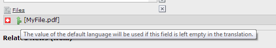
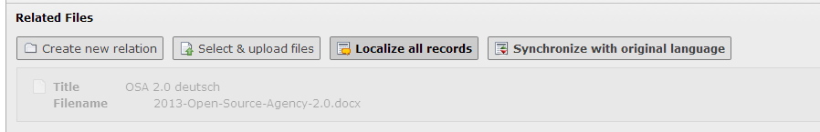
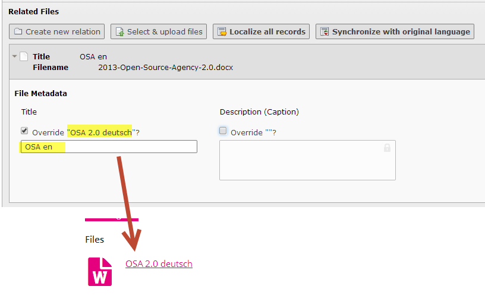

Bug #59192
mergeIfNotBlank with FAL records
| Status: | Accepted | Start date: | 2014-05-28 | |
|---|---|---|---|---|
| Priority: | Should have | Due date: | ||
| Assigned To: | - | % Done: | 0% |
|
| Category: | File Abstraction Layer (FAL) | Spent time: | - | |
| Target version: | - | |||
| TYPO3 Version: | 6.2 | Is Regression: | No | |
| PHP Version: | Sprint Focus: | |||
| Complexity: |
Description
mergeIfNotBlank doesn't seem to play with FAL records. I'm using EXT:news with FAL relations enabled (default as of 3.0). There are two FAL fields:
- Media file (fal_media)
- Related files (fal_related_files)
Both are using ExtensionManagementUtility::getFileFieldTCAConfig for their file field.
The TCA reference states the following: "Field will be editable but if the field value is blank the value from the default translation is used (this can be very useful for images shared from the default record). Requires frontend support. In the backend the effect is that the field content is not copied when a new "localization copy" is made."
From my understanding, applied to a FAL field this means the following when I localize an item:
Scenario A: I just want to use the files from the original version¶
Expectation:
The sys_file_references are not copied. I see an information about the items that are going to be used if I don't set any new relations:

When I view the localized news, the files from the original version are visible.
Current behaviour, sys_language_mode=strict:
- I don't see any information about the files being used if I don't set any new relations.
- I have no files in the frontend output at all.
Current behaviour, sys_language_mode=content_fallback:
- I don't see any information about the files being used if I don't set any new relations.
- I can see the file references.
Scenario B: I want to use own files for the localized version¶
Expectation:
I add own files. Since the fields are no longer blank in the localized version, only the localized files I added will be displayed.
Current behaviour, sys_language_mode=strict:
No files are displayed at all.
Current behaviour, sys_language_mode=content_fallback:
The files from the default language are displayed, the files from the localized version are ignored.
Possible workaround¶
The only way I can add files at all in a translated item is to change the TCA definition of the field to display the localization buttons:
$TCA['tx_news_domain_model_news']['columns']['fal_related_files'] = array(
'exclude' => 1,
'l10n_mode' => 'mergeIfNotBlank',
'label' => '' . $ll . 'tx_news_domain_model_news.fal_related_files',
'config' => \TYPO3\CMS\Core\Utility\ExtensionManagementUtility::getFileFieldTCAConfig(
'related_files',
array(
'appearance' => array(
'showAllLocalizationLink' => 1,
'showSynchronizationLink' => 1,
)
)
)
);
Then I see the files from the original language.

sys_language_mode=strict: They are still not displayed in the frontend as it would be expected for "mergeIfNotBlank" fields.
Once I localize the references, the files are displayed. But the meta information is always taken from the default language and cannot be overridden:

Relations that only exist in the localized version are still not displayed at all (both language modes).
I don't know if these are mostly Extbase or non-Extbase issues.
{kind=link}
{kind=link}
{kind=link}
Related issues
History
#1 Updated by Markus Klein about 1 year ago
- Status changed from New to Accepted
#2 Updated by Oliver Hader about 1 year ago
I'll hava a look into that... I'm trying to reproduce that with the Git version of EXT:news...
In IRRE there's the localizationMode which can be set to "keep" or "select", what should describe both of your scenarios.
The frontend-handling of sys_file_reference overlays seems to be missing in the FAL area - compare that to FileMetadataOverlayAspect which is triggered in MetaDataRepository::findByFileUid()...
#3 Updated by Ingo Schmitt 8 months ago
- Category set to File Abstraction Layer (FAL)
#4 Updated by Andreas Wolf 4 months ago
To me, this looks like the exact error described (and partly fixed) in #57272.
@Lorenz: can you try the patch created by Frans and Helmut (https://review.typo3.org/#/c/32718) and see if it fixes your problem? Handling of IRRE translations is currently broken (as in "not implemented") in Extbase. The most notable example for this is FAL references, but other use cases also won’t work.
The whole situation is pretty complicated, as there are different options for configuring the frontend output, some of which are not at all respected by Extbase currently.
#5 Updated by Andreas Wolf 4 months ago
Andreas Wolf wrote:
@Lorenz: can you try the patch created by Frans and Helmut (https://review.typo3.org/#/c/32718) and see if it fixes your problem? Handling of IRRE translations is currently broken (as in "not implemented") in Extbase. The most notable example for this is FAL references, but other use cases also won’t work.
Ah, sorry. I just saw that you already replied in the issue. I'm currently working on this topic – if it’s still relevant for you, just ping me on Slack or vie E-Mail so we can discuss your findings.
#6 Updated by Lorenz Ulrich 4 months ago
Andreas Wolf wrote:
To me, this looks like the exact error described (and partly fixed) in #57272.
@Lorenz: can you try the patch created by Frans and Helmut (https://review.typo3.org/#/c/32718) and see if it fixes your problem? Handling of IRRE translations is currently broken (as in "not implemented") in Extbase. The most notable example for this is FAL references, but other use cases also won’t work.
The whole situation is pretty complicated, as there are different options for configuring the frontend output, some of which are not at all respected by Extbase currently.
Thanks for your effort in bringing this in. As you noticed and I wrote in #57272, the patch solves the problem and makes it work closer to what it should.
The only point still valid is that IRRE doesn't consider mergeIfNotBlank at all.
Example: If I add a category to a news record in the default language and localize the news record, the localized news records inherits the categories of the parent if I don't set any categories explicitely.
In my opinion, a consistent behaviour would be that also attached IRRE records would be taken from the parent on localizing a record - as long as I don't select other IRRE records manually. But I'm aware that IRRE works differently and also has a different behaviour regarding localization.
If the patch you in #57272 is merged, this will make Extbase usable in a multi-language environment with e.g. News. The discussion about default behaviour can be held later.